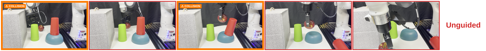
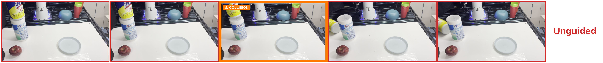
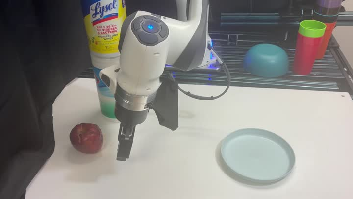
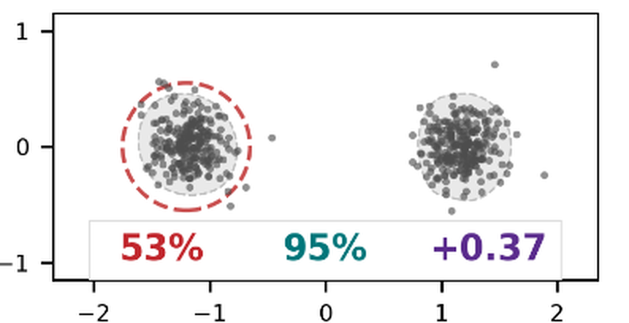
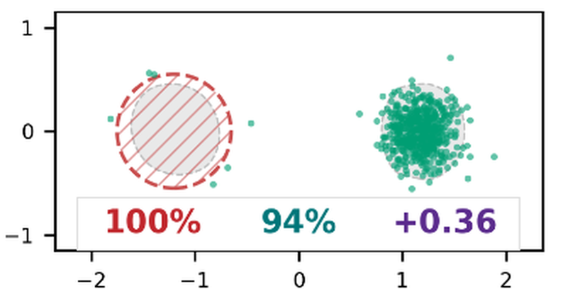
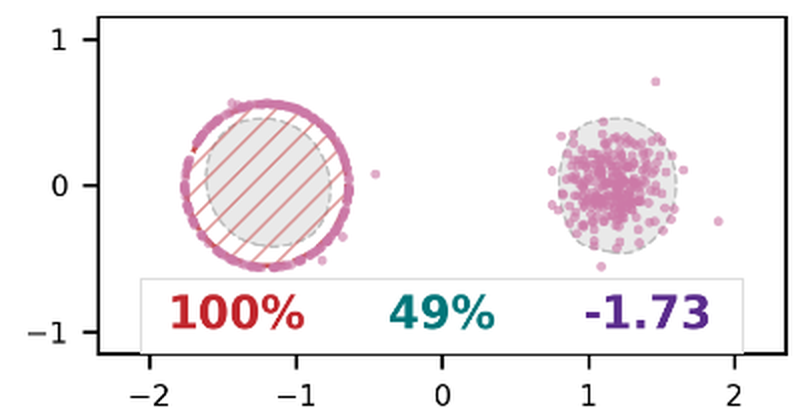
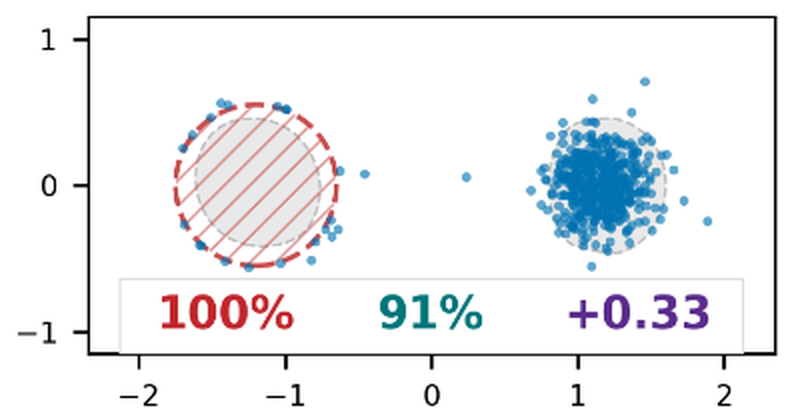
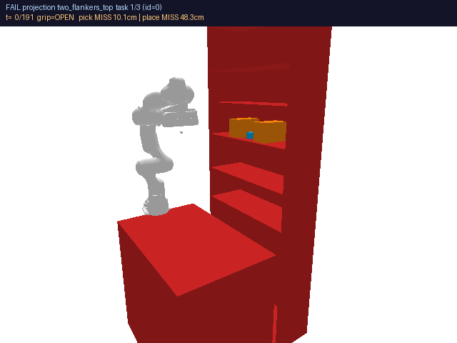
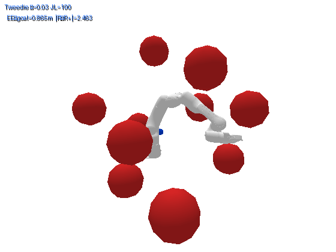
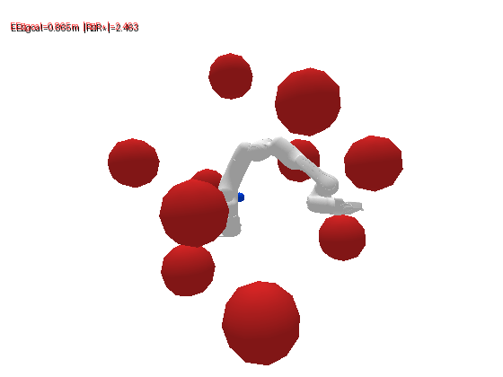

Constraint-satisfying sampling for pretrained flow policies
Enforce a constraint the demonstrations never had — without retraining, without a constraint gradient, and without executing anything the policy would not have drawn itself.
Soumojit Bhattacharya · CS-Pi · 20 min
The title is the argument, so read it out loud and let it sit for a beat. Everything in the next twenty minutes either sets it up or tests it.
One sentence of framing before you advance: "This is a sampling method. The policy is frozen, and we never take a gradient of the constraint." That rules out the two things people will otherwise assume you did.
Budget for the whole talk: ~5 min setup (the policy, the collisions, the constraint, the goal, the two properties, flow matching), ~4 min why the obvious fixes fail, ~4 min the method, ~5.5 min results, ~2 min wrap. If you are starting the turn at about eight and a half minutes you are on time.
I · The setupWhat we start with
The vision people know diffusion models, the robotics people know imitation learning, the ML people know flows. Give each of them their word: "a diffusion-style policy, trained by imitation, that we treat as a frozen generative model over actions."
Two things need to land. First, it is a distribution: draw twice and you get two different action chunks, because the demonstrations contained several ways of doing the task. That multimodality is what makes the middle of this talk hard.
Second, frozen means frozen: no gradient steps, no finetuning, no access to the data. The policy is a black box you can sample from, and that is the whole interface.
"Everything we do is at inference time. The weights never change."
I · The setupRun it as it is · Franka · π₀.₅ · two obstacle layouts


The same frozen π₀.₅, no constraint handling, on two obstacle layouts that were never in its training data. Frames run left to right; orange frames are collisions. The policy is not wrong — nothing it was ever given says the obstacle is there.
Two rows, two layouts, one policy. Point at the orange frames and say what happened: on layout 1 the gripper takes the red cup with it and drags the apple through the stack; on layout 2 it sweeps through the canister on the way to the apple.
"This is not a bad policy. It does the task. It has simply never been told the obstacle exists — and there is nothing in the interface to tell it."
That last clause is the setup for the next slide: the requirement arrives at deployment, after training, and we need a way to hand it to a frozen policy.
These are the annotated rollout frames from the paper (the repo has no unguided
hardware video). When the unguided clips exist, swap each strip for a
<video> in the same frame; the layout labels already match the clip
layouts on the two-properties and hardware slides.
I · The setupWhat arrives at deployment

here: obstacle boxes from a depth camerajoint limitsworkspace boundsa required end-effector pose
The photo is layout 1 from the previous slide, before the arm moves. The cups and the bowl were never in a demonstration, and the obstacle boxes come from a ZED 2 depth pipeline at run time. Real perception, not ground truth.
Define two things and nothing else. C is the set of feasible actions. The projection ΠC takes any action to the nearest feasible one, and δ is the distance it had to move. Say out loud that this is all the access we need: membership and projection, no gradient of anything. For obstacle boxes and joint limits, both are a few lines.
Do not say what we do with the projection yet. The next act spends a slide on why the obvious use of it — execute ΠC(a) — is a mistake.
I · The setupThe problem, in one line
p★(a | o) ∝ πθ(a | o) · 𝟙[a ∈ C]
The policy's own distribution, with the infeasible part cut away. Nothing else moves: where the policy put its mass, the target keeps it.
The whole problem in one equation, so say it in words: "the policy's distribution, restricted to the feasible set." On the left, the curve is what the policy draws; the red part violates C; the target is what is left.
Stress that the target does not move the surviving mass around. It does not pull actions toward the boundary and it does not smear them. If a method's samples look different from the black curve outside the red region, the method is wrong, not the target.
Then the rules: the policy is frozen, we never take a gradient of C, and the only access to C is the check and the projection from the previous slide. Every baseline in the next act breaks one of these rules or fails at the target.
I · The setupTwo properties · the same arm, policy and scene as before
Same frozen π₀.₅, same scene, same constraint; only the sampling differs. 4× speed, background faded. Left: every executed action is feasible, and the task still fails, because those actions are ones the policy never produces. Plausible alone fails too: the unmodified policy collides in 82% of the simulated shelf tasks shown later. Today's methods pick one. The claim of this talk: you don't have to.
Plausibility is the one that needs defending, so spend your words there. An audience accepts "don't hit things" instantly and hears "stay in-distribution" as a modelling nicety. It isn't: off the data manifold, the learned dynamics stop being predictive, the trajectories stop being smooth, and the arm does things nobody trained it to do.
"Plausible is a safety property. Off the data, nothing you validated about the policy still holds."
The left clip is the proof: execute the projected action and you are feasible at every step — and the arm never completes the task, because it is executing actions the policy would never have drawn. The right clip is the same policy, the same scene, sampled our way.
Do not explain the method here. Say only: π₀.₅ zero-shot on a Franka, no finetuning, obstacle boxes from a ZED 2 depth pipeline. Then make the promise that buys you the next fifteen minutes: "By the end you'll know exactly what changed, and it's a loop you could write this afternoon."
The bind in measured numbers, if you want it: the strongest feasibility-first baseline on our shelf task is feasible 96% of the time and pays with samples the policy assigns almost no mass to; the strongest in-distribution method is the unmodified policy, which collides in 82% of the same tasks.
This is layout 1: the obstacles are the two cups and the bowl at the back of the table, tinted red in the clip; the canister stack is scenery. Layout 2, where the canisters are the obstacle, is on the hardware results slide. The clips are colour-graded and the background is washed out so the arm, apple and plate read from the back of the room; nothing in the footage was altered otherwise.
I · The setupBackground · flow matching, just enough to follow the method
Teach the axis: left to right is flow time. A draw starts as pure noise at t = 0, the learned velocity moves it, and at t = 1 it is an action. The grey lines are draws. They gather into two bundles because the demonstrations showed two behaviours — that is the multimodality from the policy slide, seen from the side.
Training is the dashed line: pick a noise sample and a demonstrated action, draw the straight line between them, and regress the velocity onto a − ε at points along it. That is all flow matching is. Sampling follows the learned field, and the paths curve because the field is an average over all the pairs that pass nearby.
"Here is the one fact the method rests on: a point on that dashed line is a legitimate state of the flow at time t. Take any action, mix it with noise at the right ratio, and the flow will carry on from there."
Do not say "renoise" yet. When it arrives in act III it should sound like this slide.
II · Two attemptsThe same picture, with the constraint on it
draw â from the policy→execute
The flow from the background slide, with C drawn on it: the red band is the set of actions that violate the constraint. Nothing in the flow knows it exists, so some draws end inside it — like this one. The strip on the left is the same pass as a recipe: noise, flow, a draw, execute. Every method that follows changes one row of it.
The axis was taught on the flow-matching slide, so do not re-teach it. Add one thing: the red band at the top is C's complement — the actions that violate the constraint. The policy was never told, so some of its draws end up there, like the blue one. This picture is going to grow for the next five slides.
Point at the strip on the left once: one sampling pass, top to bottom. Each baseline will change one row of it, and the figure on the right shows what that does to the draw.
"The policy is frozen. Every method in this talk is a place on this axis where you intervene: in the middle, at the end, or by going back. That's the whole design space."
II · Two attemptsAttempt 1 · gradient guidance
draw−α ∇C at every step→execute
Expect sympathy for guidance in the room, so be precise rather than dismissive. Walk the picture: the red arrows are the constraint gradient, added to the velocity at every step. The dotted line is the thing the gradient is actually evaluated on — the flow's guess of where it will end up.
The key sentence: halfway through, the flow has not yet chosen between behaviour A and behaviour B, so its guess is the average of the two — a point in the gap, which is not an action the policy ever produces. The gradient at that point pushes on a plan nobody proposed, and the draw ends in the gap too: it is out of the band, and it is off-distribution.
Second, briefly: a hard constraint has no usable gradient — distance to a box is flat away from the boundary and non-smooth at it — so guidance enforces a smoothed surrogate instead.
"Changing the velocity in the middle, using a gradient of a guess, is how you leave the data. So whatever we do, we do it to a finished draw, not to the flow."
II · Two attemptsAttempt 2 · projection
draw â→project onto C → c, δ→execute c
Do not trash projection. It is the strongest baseline in the paper, and the entire idea of the method is that it is almost right.
Walk the arrow: the flow finishes, the draw is in the band, and we move it the shortest distance that makes it feasible. That distance is δ, and the point we reach is c. Both are free, and neither needs a gradient.
Then the defect, in exactly these words: c is chosen for proximity, not for likelihood. Look at the picture — no grey line ends at c. It is not a draw from the policy; it is a draw that was edited afterwards. On the shelf that is the difference between a plan the arm can execute and one it cannot.
"Projection gets a feasible answer. It just gets it by leaving the model."
II · Two attemptsThe honest fix · rejection sampling
draw→in the band?→discard, restart from t = 0→…
Rejection is the honest baseline, and it is worth saying so: what it produces is exactly what we want — a real draw from the policy that happens to be feasible. The 2D slide later uses it as the reference picture.
The cost is in the figure: every grey restart goes all the way back to t = 0, and most of them land in the band again, because the band is where the policy's mass is. The green one is accepted — eventually. Nothing learned from the failures is used.
"So we're holding c, and we know two things about it: it's feasible, and it's not a draw. Executing it is wrong. Throwing it away is wasteful. There's a third option."
Advance on that line — the next slide is the third option.
III · The ideaCS-Pi · one pass
draw â→project → c, δ→renoise c to t = n = k/(k+δ), re-run the flow→a′
a′ ∼ (1/Z) · πθ(a′ | o) · exp(−k²‖a′ − c‖² / 2δ²)
Going back to t = n = k/(k+δ) and re-running the flow samples exactly this product. One extra forward pass, no constraint gradient, and what comes out is a draw.
This is the hinge of the talk, so lay out the fork plainly first. We are holding c. It is feasible and it is off-distribution. Executing it is projection's mistake; discarding it is rejection's waste. The third option: use it to tell the next draw where to look.
Then the picture. Renoising means taking c back along the time axis: mix it with noise to make a state at t = n, and let the flow run again from there. Whatever comes out is a real draw — it went through the flow — and because it started from c-plus-noise it ends near c: closer to the boundary than â was. Not there yet. Closer.
Equation, two factors, in this order. The first factor is the policy's own density: the redraw is a draw, not a bent one and not a snapped one. The second is a Gaussian at c with width δ/k: that is the bias. Multiply, normalise, draw. One Bayes step on the interpolant law says re-running from t = n samples exactly this product; the identity is (1−n)/n = δ/k. Strictly the window sits at c plus the injected noise scaled by δ/k, which is why it is a window and not a point.
"We're not steering the policy and we're not overwriting it. We're multiplying it by a Gaussian centred where the projection said feasible is — and the violation sets how wide that Gaussian is."
III · The ideaCS-Pi · the loop, and k
draw→project→renoise, re-run→project→renoise, re-run→δ = 0 · execute
Every pass is a real draw that starts from c-plus-noise, so δ shrinks and n = k/(k+δ) grows pass over pass. Stop when δ is below tolerance, or cap the passes and project the last chunk.
Trace the picture: pass one goes back to t = 0.6 and lands closer; pass two only needs to go back to t = 0.8, and lands outside the band. Two things to point at: both redraws are real paths through the flow, and the second goes back less far than the first, because the δ that sets it was smaller.
k is the only knob, and it sets how far back you go for a given δ. The window width is δ/k. Small k: go back far, the flow can still change its mind and switch behaviours — what a large δ needs — but the pull toward c is weak, so it takes more passes. Large k: go back a little, the redraw stays close to c, δ collapses fast, but it can only refine the behaviour it is already in.
Then the honest headline: k = 20, fixed across all four benchmarks. Using per-benchmark values buys at most 4.3 points.
"Refine when you're close, reconsider when you're not — the same operation at two depths, and the depth is set by the violation itself."
III · The ideaLive · click the canvas to restart
The same loop, now in the workspace: the action chunk is a trajectory, the obstacle is a disc on the demonstrated route. Narrate one cycle, reading the numbers off the bar as they change:
"Three iterations. And the thing we execute at the end is an ordinary draw from the policy — it just started from a better place."
IV · Does it work2D diagnostic · setup
A bimodal policy: two clusters of demonstrated behaviour. We block the left mode with a constraint the demos never had. Low enough dimension that we can just look at every method's samples.


Left: the policy doesn't know the constraint exists, so it populates both clusters — 53% feasible.
Right is the slide's whole job. Rejection sampling is statistically exact, so this is what "feasible AND in-distribution" looks like: the blocked cluster is empty and the surviving cluster is untouched — same shape, same place, same density.
"That right-hand panel is the answer. The only question is who can produce it without paying rejection's compute bill."
Do not linger. This slide exists so the next one needs no explanation.
IV · Does it work2D diagnostic · both are 100% feasible


Same constraint, same prior, both 100% feasible. Left: every sample that started in the blocked mode is pinned to the rim — a ring of actions no demonstration ever produced. Right: the blocked mode is empty and the surviving mode is intact.
Advance, then say nothing for three seconds. The audience will find the ring on their own, and it lands far harder than being told.
Then, pointing at the left panel: "Every one of those points is legal. Not one of them is a plan the policy would have produced." That arc is what a projection operator does when it is chosen for proximity: it stops at the first feasible point, which is the boundary.
Right panel: compare it back to the rejection reference from the previous slide — same shape, same place. 91% in-support against projection's 49%.
"Feasibility is easy. Feasibility that still looks like the policy is the whole problem — and that's the difference between these two pictures."
IV · Does it work7-DoF Franka · 150 tasks · obstacles added at deployment

Set the clips up in one line: same scenario, same policy, two samplers. Then let them play while you deliver the three tiles.
73.3 vs 62.0 over the strongest baseline. Say that safe-success conjoins collision-free with picked-and-placed on purpose, so a method that refuses to move scores zero — otherwise someone will ask.
78.7% goal reach is the quiet result: higher than the unmodified policy's own 72%. Enforcing the constraint helped the task, because avoiding the obstacle keeps the arm out of states where it fails.
logL 18.0 against 15.0 — cash out the theory slide here in one sentence.
Volunteer the collision rate before anyone asks: ours is 6.7%, projection's is 4.0%, tuned guidance is 0.0%. Guidance's zero comes with 28% goal reach — that isn't safe, it's inert. We trade 2.7 points of collision for 12 points of goal reach.
IV · Does it work7-DoF reach · orientation held throughout · same loop, new operator


Here the requirement is a soft orientation preference, not a hard set — so the priorities invert. Satisfying the cost is easy; doing it with a trajectory an arm can execute is not. 68.9% success against 10.0% for the best baseline, at the unmodified policy's own smoothness.
This slide is about generality and it makes its case visually — tell them to watch how the arms move, not whether they succeed.
The only change from the shelf is the projection operator: swap the feasible-set snap for an end-effector proximity step. Same loop, same code, same k.
The inversion is the interesting part. On the shelf, a collision is terminal, so trading likelihood for feasibility is obviously right. Here, missing the orientation slightly costs almost nothing — but leaving the manifold costs everything, because the arm executes the trajectory either way.
"Guidance satisfies the orientation with metre-scale jumps. That's not a trajectory, it's a teleport. We satisfy it and move like the original policy."
And say it's the friendliest possible setting for guidance — a dense, smooth, differentiable cost — so nobody thinks the task was chosen to break it.
IV · Does it workπ₀.₅ · no finetuning · ZED 2 perception · 2 layouts · 20 trials per method
Say "55%" and then immediately say it isn't a solved task. An audience that hears you volunteer the weakness stops looking for it; one that catches you burying it stops trusting the other numbers.
The framing that makes 55% a real result: frozen π₀.₅, zero-shot, obstacles absent from training, constraints from a ZED 2 depth pipeline with real noise — and 15 points clear of the best baseline.
Both clips are layout 2 — the canister stack is the obstacle (tinted red), with the apple beneath it — so the deck shows both hardware layouts: layout 1 on the two-properties slide, layout 2 here. The top clip is guidance thrashing, which is the same off-manifold pathology from 3D-Orient in physical units. The bottom one is trust sampling failing the same layout. Let them loop while you deliver the tiles. (There is no CS-Pi success clip for layout 2 in the repo; the number for it is 50% vs 40% for projection.)
Cost, in one line: about one extra forward pass on average, still running around 7 Hz on the arm — versus roughly 30× for rejection sampling.
V · WrapSay these before the audience does
Deliver these fast and flatly. The goal is not to soften them — it's to show you know exactly where the method ends, which is what makes the earlier claims credible.
The first one is the real limitation and the most interesting: the method's contribution is finding a feasible mode the policy already has. That predicts a dependence on demonstration coverage, and the 1.00 → 0.91 drop is the first evidence of it. The clean experiment — sweep the demonstration support and watch success track it — is the one I'd run next, and it's a good thing to say you'd run next.
If time is short, cut the second bullet and keep the first and third.
V · WrapTakeaway
The projection is a cheap, clean, gradient-free feasibility signal. The only mistake was ever executing it.
Use it to decide where to start sampling again — draw, project, renoise to n = k/(k+δ), re-run. No retraining, no constraint gradient, about one extra forward pass, and what you execute is always a sample the policy could have produced.
Say the quote, then stop talking. Do not summarise the results again — the picture from the 2D slide is what they'll remember, and adding numbers now dilutes it.
If you want a closing line to invite questions, use the one that opens the most doors: "The part I'd most like to argue about is whether the prior's coverage is the real ceiling here."
Questions you should expect, in likelihood order: why not rejection sampling (30× compute, degrades as the constraint tightens); why not just tune guidance (no good setting — 0% collisions at 28% goal reach); how do you pick k (fixed at 20 everywhere, ≤4.3 points versus per-task tuning); does it guarantee feasibility (asymptotically, or exactly with the terminal projection); what if the constraint is infeasible (it degrades gracefully rather than diverging — there's a backup slide in the long deck).